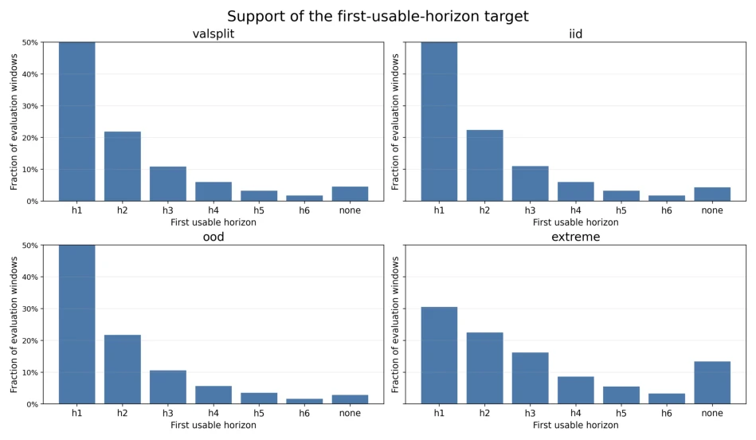
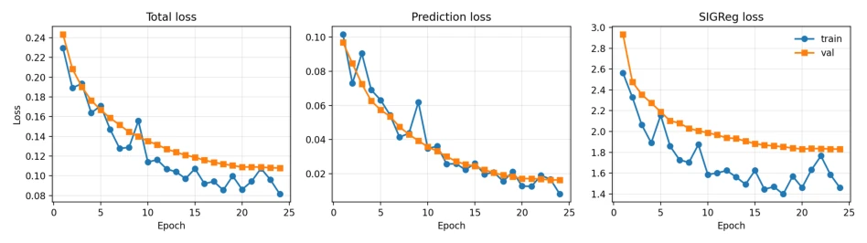
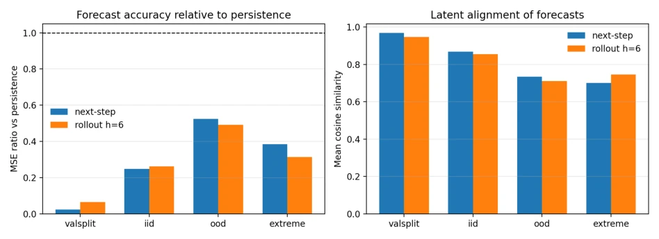
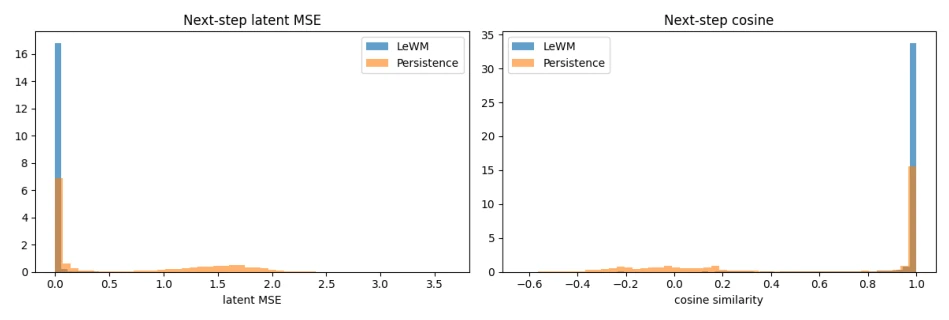
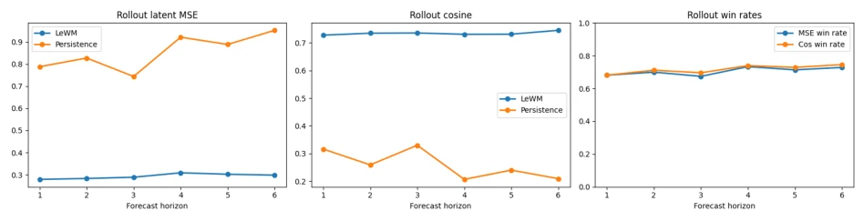
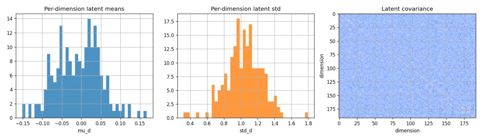
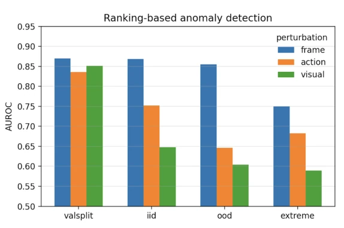
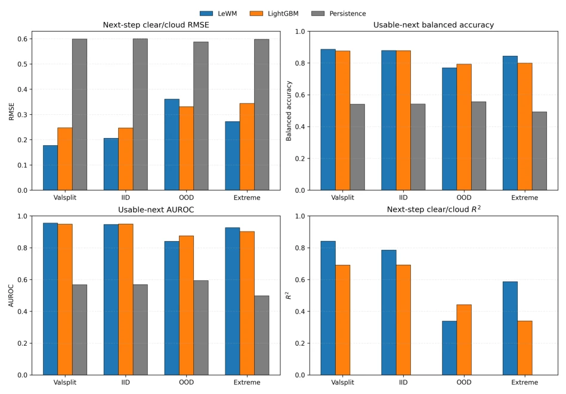
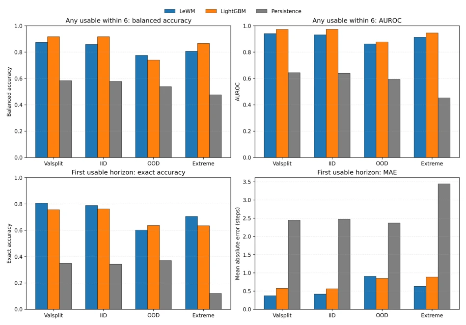
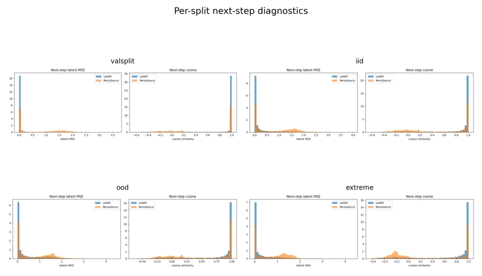

This paper accurately pinpoints the pain points of Earth Observation (EO): images arrive but are obscured by clouds, which is more problematic than having no images at all. The authors did not pursue fancy pixel reconstruction, but instead employed LeWorldModel for "visibility prediction", a pragmatic approach. After all, for monitoring, knowing "whether it is visible" is more urgent than knowing "what lies beneath the clouds". However, do not expect it to be an omnipotent world model; it is merely a "cloud amount forecaster". In experiments, traditional machine learning such as LightGBM could actually hold its own against deep learning models on some simple tasks, and even exhibited stronger OOD generalization, which is somewhat of a surprising contradiction. Moreover, the OOD performance decline is significant, indicating the model is still somewhat weak on out-of-distribution data. Overall, it is a useful "weather-dependent" tool, but far from true embodied intelligent decision-making. Do not use it as a planner; it is only responsible for predicting states rather than controlling actions.
The bottleneck of the Earth Observation processing chain has never been insufficient data, but rather that data arrives but is all clouds [1]. Existing work mostly focuses on how to "fix" the clouds [6, 7], or how to predict surface pixels [1, 4], or even large model pre-training [10, 12]. But in actual operation, operations personnel are most concerned with "whether the ground can be captured during the next satellite pass", not "what lies under the clouds". This paper points out that existing research lacks explicit prediction of "visibility" itself, i.e., whether future observations are available and when they will recover availability. The authors reconstruct the problem from "surface prediction" to "visibility prediction", filling the gap in monitoring decision-making under cloud occlusion, emphasizing that temporal state evolution is more important than pixel synthesis, solving the key decision problem of "when can we see".

Figure 9: Normalized support of the first-usable-horizon target in the full frozen-bundle evaluation windows. Each panel is normalized within split so the horizon distribution is directly comparable across valsplit, IID, OOD, and extreme. Raw support counts are reported in Table 15. The extreme split is both cloudier and temporally longer, which shifts mass toward later recovery and no recovery within the six-step horizon.
The overall process converts raw minicubes from EarthNet2021 into episodic sequences containing 5 spectral channels (blue, green, red, NIR + cloud mask) and 8 meteorological covariates. The model is based on LeWorldModel, adopting the JEPA architecture, not reconstructing pixels, but learning latent states. The encoder uses ViT-tiny, mapping images to 192-dim latent, covariates aligned via MLP projection. The predictor is a 6-layer Transformer, using teacher-forced method to predict future latent states, and adding SIGReg regularization to maintain Gaussian geometry. After training, the backbone is frozen, only fitting linear probes for downstream tasks. The evaluation protocol is very strict: training set fits probes, validation set calibrates, test set completely frozen, preventing overfitting to specific splits. In data preprocessing, the cloud mask channel is specifically retained rather than discarded, ensuring the model can distinguish true low reflectance from cloud occlusion.

Figure 1: LeWM training and validation curves on EarthNet2021, plotted from the final run log used for downstream evaluation.
Tested on four splits of EarthNet2021 (valsplit, IID, OOD, Extreme). Baselines include Persistence and LightGBM. Metrics cover next-step availability, first-availability time prediction, anomaly detection, etc. Results show LeWM outperforms Persistence on all splits, proving the effectiveness of latent dynamic learning. Compared to LightGBM, LeWM is stronger in continuous regression and precise time prediction (especially in Extreme scenarios), but slightly inferior in simple binary classification and OOD. Ablation analysis indicates latent geometry health correlates with performance, latent distribution shift during OOD causes performance drop. In Extreme scenarios, LeWM still maintains significant advantage, proving it can handle more complex cloud sequences, but OOD generalization remains a shortcoming.

Figure 2: Sampled latent-forecast diagnostics across splits from the executed notebooks. Left: mean-squared-error ratio relative to persistence (lower is better; dashed line is parity with persistence). Right: cosine similarity between predicted and target latent states. LeWM remains better than persistence on every split, but the margin narrows substantially on OOD.

Figure 3: Detailed next-step diagnostics from a fixed sampled subset of the valsplit. Left: histogram of latent MSE. Right: histogram of latent cosine similarity. These distributions explain the strong average next-step metrics: LeWM places much more mass in the near-perfect prediction regime than persistence.

Figure 4: Detailed rollout diagnostics from a fixed sampled subset of the extreme split. LeWM maintains lower rollout MSE, higher cosine similarity, and better per-window win rates than persistence throughout the full six-step forecast horizon.

Figure 5: Latent-geometry diagnostics from a fixed sampled subset of valsplit: histogram of per-dimension means, histogram of per-dimension standard deviations, and latent covariance matrix. The figure visually confirms the approximately isotropic geometry summarized numerically in Table 4.

Figure 6: Sampled ranking-based anomaly detection from fixed notebook windows under synthetic future inconsisten- cies.

Figure 7: Full frozen-bundle benchmark for next-step observation quality. LeWM is consistently better than persistence and usually better than LightGBM on continuous clear/cloud regression. On binary usable-next classification, LeWM wins on valsplit and extreme, is essentially tied on IID, and loses on OOD.

Figure 8: Full frozen-bundle comparison on cloud-aware rollout monitoring tasks. Top row: binary prediction of whether any usable observation occurs within six future steps. Bottom row: exact timing accuracy and mean absolute error for the first usable future observation. LightGBM is strongest on the simpler binary any-usable task on most splits, whereas LeWM is strongest on exact timing on valsplit, IID, and extreme.
其他图片Other Figures

Figure 10: Per-split next-step diagnostics from the executed notebooks on fixed sampled windows. For each split we show the full latent-MSE and latent-cosine histograms for LeWM and persistence.